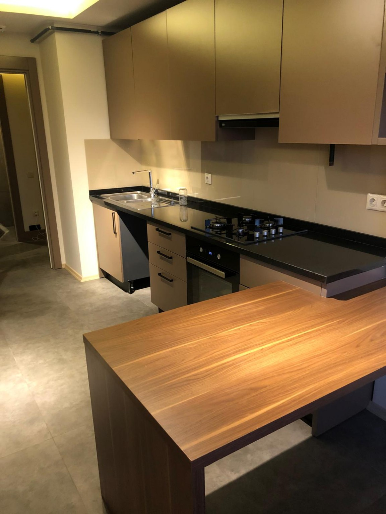

Mersin İnşaat Sonrası Temizlik
Yeni tamamlanan daire, bina, iş yeri ve proje alanlarında inşaat sürecinden kalan yoğun toz, kir ve kalıntıların detaylı temizliğini planlıyoruz.

Arin Temizlik Mersin ile planlı ve ihtiyaca uygun temizlik
İnşaat sonrası temizlik neden farklıdır?
İnşaat bittikten sonra yüzeylerde ince inşaat tozu, ambalaj ve uygulama kalıntıları kalabilir. Bu nedenle günlük temizlikten farklı olarak alanın yüzeyleri, kirlilik yoğunluğu ve detayları birlikte değerlendirilir.
Hangi alanlarda çalışıyoruz?
Yeni tamamlanan boş daireler, binalar, iş yerleri, ortak kullanım alanları ve çok daireli projelerde işin kapsamına göre ekip ve çalışma süresi planlıyoruz.
Çalışma nasıl belirleniyor?
Mümkün olduğunda alanı yerinde görüyoruz. Uygun işlerde WhatsApp üzerinden gönderilen fotoğraf ve videoları da inceleyebiliyoruz. Fiyatlandırma, kapsam netleştikten sonra yapılır.
Temizlenecek alanı birlikte değerlendirelim.
Alanı yerinde görebilir veya uygun durumlarda WhatsApp üzerinden video ve fotoğrafları inceleyebiliriz. İşin kapsamı netleştikten sonra fiyatlandırma yapılır.